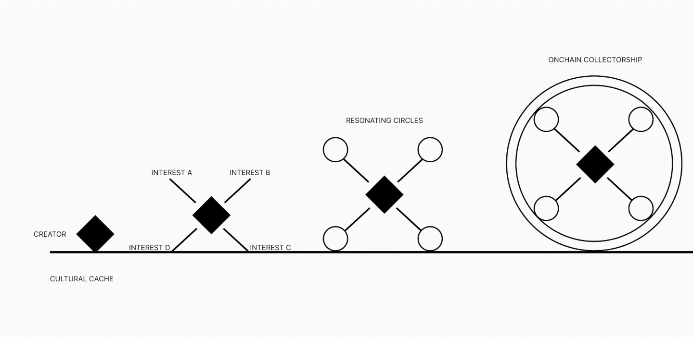

The Onchain Collectorship
For visual art to upgrade from hobby to industry an ‘onchain collectorship’ is vital.
How things currently play out
Art is seen as a luxury, but not in the way that sports, film, tv, and gossip news are. The latter are ingrained in the consumption flywheel of modern civilization. Revenue splits are something I wish to discuss at a later date, but for now they do a markedly better job at monetizing themselves. Art, from the majority, is:
- rarely paid for (right click save as)
- haggled down if paid for
- assumed to be free (reference paywall content discussions on YT)
- preferred to be stock when designing and decorating public & private spaces
Why?
Regardless of intention, the organization (or lack thereof) of visual art does it no favors. In the offchain era, an artist sold their work physically with loose ownership or authenticity standards. The sales were mostly one-offs or arrangement deals with auction houses and galleries that maximized their leverage in price negotiations.
This set up only became slightly more negotiable with the advent of social media. An artist now had a hosted platform from which they could broadcast signal and develop a market facing brand. Still, the aforementioned circumstances are still applicable; the domino effect of this tenured chaos bringing about the desert I articulated in How things currently play out.
It is only now, the onchain era, for which we are at the very beginning of, that visual art has a chance to enter a more negotiable space for the value that it supplies.
Here is a wonderful write up on the intricacies of that oncoming era:
ONCHAIN ERABottlenecks
Digging into the meal a little bit further, I would like to list some of the bottlenecks I have found rather prevalent in the visual art community after nearly a decade making art. I believe these to be significant in manifesting the current commercial circumstances we look to overturn in the onchain era.
These bottlenecks include:
- Warholism
- A friend of a friend
- Style over substance
- I could've done that
- Where's the utility?
Warholism
I’m not sure if the term has already been coined, but I will define it this way…
the market preference for tongue in cheek absurdity as a means for status elevation & condescending social commentary by the buyer
The gist of this is that you will see a preference for buying work that is so absurd (not in style, but in price, person, & effort) that it is the buyer making a statement about themself and how they feel about others.
As a fan of Warhol I hope this term is not misunderstood for a dig at him, rather a critique on the people who feel self righteous in their support of disingenuous Warholic contemporaries. There is a taste conversation to be had here at a later date as well.
A friend of a friend
People struggle to pinpoint their own taste preferences and heavily rely on their inner circle to help define it. This makes it incredibly challenging for anything outside of their aggregate profile settings to enter it, even if a member of that circle has genuine interest in something outside of it. The inverse of this effect is how ‘hype’ stirs.
Style over substance
The narrative is starting to shift, but there is a massively unspoken agreement that ‘generalists’ are subpar to the ‘specialists’. There are many preconceived notions about effort and skill development timelines influencing how supporters value art and thereby the artists producing it.
Small anecdote I think of often:
Bruce Lee said he fears the man who has practiced one kick 10,000 times over the man who has practiced 10,000 kicks one time. In this example I agree, but my counter anecdote to illustrate more context would be - I fear the man who has practiced five kicks 2,000 times each over the man who has practiced one kick 10,000 times.
The majority of art supporters do not view it this way. In my opinion, this is one of the greatest bottlenecks onchain collectorship can solve (more on that later).
I could've done that
Self explanatory.
Where's the utility?
After being in the nft space for over two years I am just piecing together the deeper connections of where’s the utility? question. To me, it is an articulation of long held opinions on art in general. People are now able to pair it with something substantial without it coming across as rude.
People don’t question the utility of sports, film, tv, books, music, etc. They understand the value proposition. For some reason or another they seem to not consider visual art as being in that wheelhouse - even though it is.
I believe the onchain ledger will do wonders at mitigating this critique. In the same way that jerseys and flags congregate supporters, so too will the blockchain ledger for collectors I’d wager.
How onchain collectorship solves some of this
To keep this write up within a moderate range I will tackle each of the Bottlenecks subheadings through the lens of onchain collectorship (see graphic above).
These solutions are simply estimated best case scenarios from a couple years of daily research and experimentation. As a creator and collector my goal here is to simply, enhance, and distribute ranges of organization to visual art - so that we can begin to tap into the dormant value propositions.
Warholism
Time becomes a valuable asset in the discography of a visual artist with blockchains. If we work off the assumption that much of Warholism, as I have previously defined, is the optimal status and wealth creation play within time restricted horizons - then my claim about time becomes valid.
Quickly let’s add more context to ‘optimal status and wealth creation play within time restricted horizons’.
As Naval Ravikant so eloquently articulated:
There are wealth games and status games. The people attacking wealth players are status players.
Beyond the generalizations of that quote, we understand that it’s truly a mix of both that we are playing. And when discussing visual art it is incredibly grey.
So, picking a middle curve (non-pejorative) collector, we can estimate that Warholism is a play that brings upon desired results for these collectors; wealth and status. And my claim about ‘optimal status and wealth creation play’ becomes complete when we add in the ‘time horizons’ component.
Currently we are discussing offchain art. In that space, the time horizon is limited to how long one person tells another person that tells another person. It is limited to the confines of one physical location as well (important to imagine the amount of time other eyes will actually view it and then talk about it). Thus, my definition of Warholism being about absurd commentary hopefully makes more sense now. If you wish to make a statement in a shorter time frame, you must be ‘louder’ (absurd).
Offchain collectorship I believe weights itself toward Warholism in large part because of this time restricted horizon by which the players have to generate wealth and status.
Onchain collectorship is an entirely different beast. It does not erase Warholism either. In fact, it provides more time to play the ‘games’. Here we have an upgrade that doesn’t ostracize grandfathered players while simultaneously creating space for other types of players to enter.
At this point of context it is best to leave you with questions instead of more opinions. So think:
- Would you collect more, differently, less, or coherently with 30-100x more time?
- Would you be as worried about ROI if you had 30-100x more time?
- Would you take more collector risks with 30-100x more time?
- Would you experiment with what it means to collect with 30-100x more time?
A friend of a friend
This one is incredibly simple in my opinion. The global nature of blockchains and the onchain visual art community affords far more ‘hype' generators. No longer confined to your physical locale’s taste preferences, onchain collectors have an entire ocean of avid enjoyers to discuss, share, trade, and build with.
Offchain art pales in comparison in this aspect. I would even go so far as to say what was a ‘negative’ in offchain art now becomes a ‘positive’ in onchain art.
Style over substance
The graphic above does a better job articulating this solution. Reminder, offchain art collectors, auction houses, and galleries are playing on shortened time horizons. This means expectations are more rigid.
In that world having one style is the preference. In onchain collectorship there are endless (as long as we make more humans) suitors. This means that creators can now fully maximize their curiosities, allowing them to resonate with circles that appreciate them, without being penalized by the circles that prefer their initial style.
As a creator this is one of the more exciting upgrades. I believe we will see a renaissance of creators over the next 10-20 years supercharged by this decentralized taste expression.
I could've done that
Anyone can mint. Anyone can put their money where their mouth is. And any collector can come by and choose to support them.
Where's the utility?
I’m going to save this one for a full post later this year. But the short of it is the statement “art is the utility” is onto something. I believe more nuance and unpacking is needed to explain why that is, but time horizons and style expansion have a part to play if you wish to get a jump on unpacking it.
Wrap up
- offchain visual art is highly disorganized
- onchain visual art births the onchain collectorship
- offchain collectorship works against the artist because of time horizons
- onchain collectorship works with the artist because of time horizons
- bottlenecks of offchain art can be remedied onchain
- wealth and status games are integral to the art world